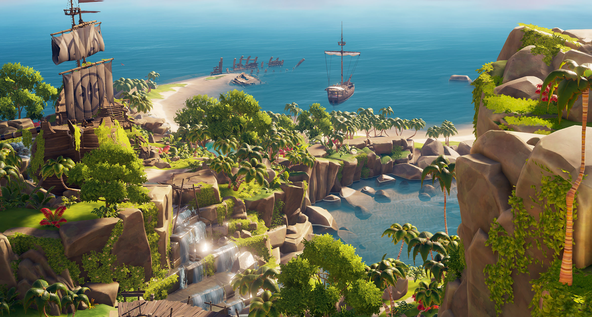
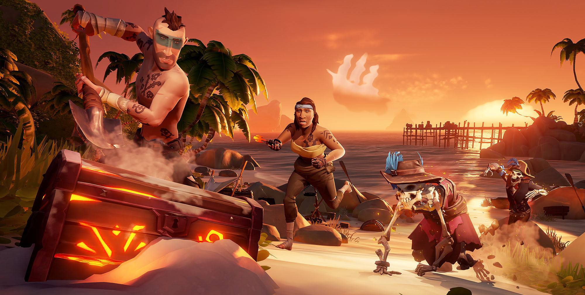
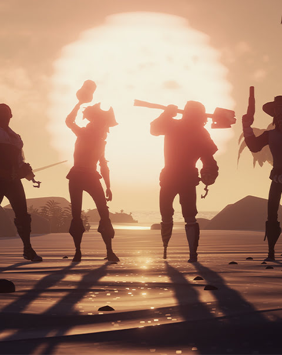

Sea of thieves
Sea of thieves, sea of thieves es tu pasaporte de entrada a la vida pirata que siempre has deseado tener. prepárate para un mundo de aventuras, emoción y descubrimientos con unas aguas repletas de montones de jugadores. tienes a tu alcance todo lo que te hace falta para surcar sus aguas, así que tú decides dónde quieres ir. disfruta de historias emocionantes, peligrosas criaturas marinas y montones de tesoros ocultos que te ayudarán a labrar tu propia leyenda pirata.
ACCIÓN Y EMOCIÓN
Sea of Thieves es un mundo repleto de peligro y emoción por igual, independientemente de si te preparas para enfrentarte a una horda de esqueletos malditos sable en mano, de si estás en mitad de una batalla naval contra otro barco pirata o de si intentas esquivar trampas mortales en busca de una cripta subterránea.
EXPLORA Y HAZ DESCUBRIMIENTOS
Te esperan unas aguas repletas de islas preciosas, asentamientos y cuevas hundidas por explorar, secretos por descubrir y tesoros que agenciarte por el camino. Este mundo cambiante, su clima, los eventos especiales y los encontronazos que tengas con otras tripulaciones garantizarán que tus aventuras nunca serán iguales.
Sea of Thieves anima a sus jugadores a elegir un punto en el horizonte y que no paren hasta descubrir todos sus secretos. No importa si ese punto es el pasaje subterráneo más profundo o el pico más alto de una isla.
ÚNETE A LA TRIPULACIÓN
Sea of Thieves cuenta con una de las comunidades de jugadores más acogedoras del mundo de los videojuegos, integrada por dos millones de usuarios activos. Además, el juego dispone de foros con buen rollo y mogollón de recursos para sus seguidores, piratas que buscan tripulación y streamers.
La web tiene varios acertijos que nos pregunta un misterioso personaje que se supone que es el villano de la película, pero sus preguntas son bastante complejas y resolverlas no es tan fácil como parece, y si fallas te intenta poner nervioso, hasta que decide darte una nueva oportunidad y plantea nuevas preguntas.